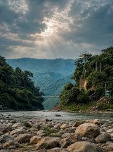
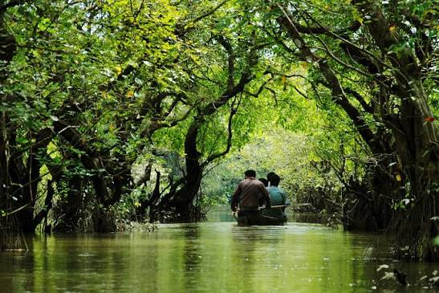

Historical importance
Sylhet has a long history as a centre of trade and spiritual life. The legacy of Hazrat Shah Jalal, historic settlements, and the tea industry all contribute to the division’s place in Bangladesh’s story.
Tea gardens & wetlands
Rolling green tea estates, forested hills, clear-water streams, and vast seasonal wetlands define the north-east.
Introduction & location
Sylhet Division sits in the north-east of Bangladesh beside the Indian states of Assam, Meghalaya, and Tripura. Its landscape rises from the Surma–Kushiyara floodplains to low hills, tea estates, and the extensive haor wetlands.
Rainfall from the surrounding hills feeds rivers and seasonal lakes that sustain fishing, agriculture, and a rich variety of birdlife.
Discover the region

Set against the Meghalaya hills, Jaflong is known for river scenery, stone landscapes, and views of the border highlands.

This freshwater swamp forest is seasonally flooded, creating a remarkable environment for boat trips and wildlife.

Tea gardens, forest trails, and small communities make Moulvibazar a celebrated destination in the region.
Heritage & everyday life
Sylhet has a long history as a centre of trade and spiritual life. The legacy of Hazrat Shah Jalal, historic settlements, and the tea industry all contribute to the division’s place in Bangladesh’s story.
Sylheti language and music, seasonal haor life, tea-garden communities, and distinctive crafts give the region a strong identity. The diaspora also maintains close family and cultural ties with the area.
Shatkora beef, pitha, citrus fruits, and freshwater fish are regional favourites. The fragrant shatkora fruit adds a distinctive citrus note to curries and is a defining taste of Sylheti cooking.
Tea, agriculture, fisheries, remittances, and natural gas are important to the regional economy. Wetlands and rivers support livelihoods and food systems that vary with the seasonal flood cycle.
The Surma and Kushiyara rivers feed the haors, including Tanguar Haor, a Ramsar wetland. Forest patches, swamp forest, and wetlands provide habitat for migratory birds, fish, and other wildlife.
Sylhet’s tea, gas, and agricultural resources contribute to national livelihoods, while its wetlands are critical for biodiversity and fisheries. The region’s cross-border rivers also highlight the importance of shared water stewardship.